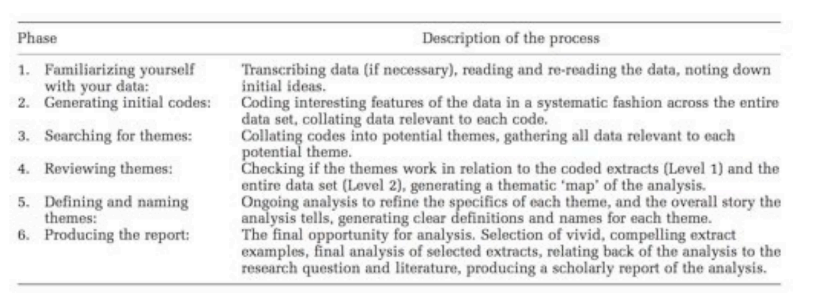
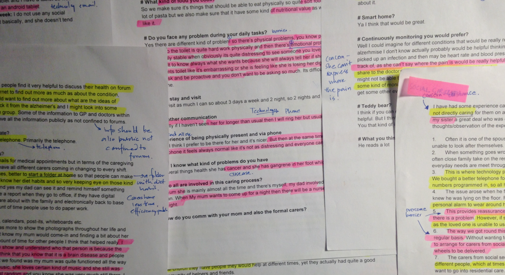
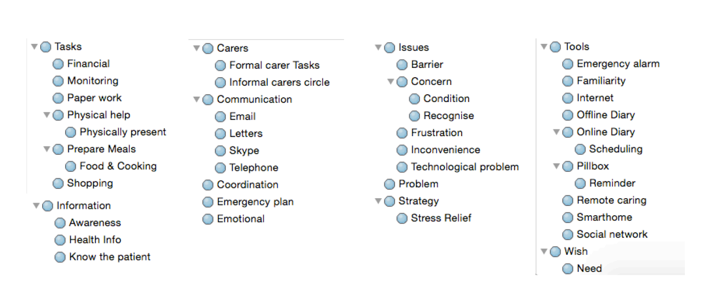
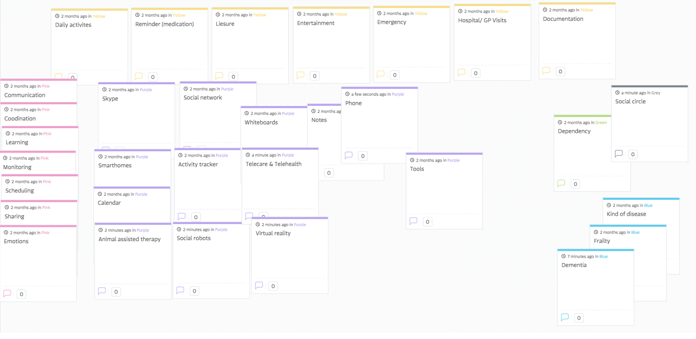

Earlier I had the chance to work with one of the most pressing issue the UK is facing today, the ageing population and its burden to informal carers. I will not go further on the research itself which you can read here.
However, this blog will cover the basics of doing Data analysis using thematic analysis.
What is Thematic Analysis?
It is an exploratory data analysis process that induces emerging theories from the data to get insights. It does not consider any specific theory or preconceptions beforehand but identifies detailed themes from the data.
It has six phases as shown in the picture below:

- In the first phase, make sure to transcrib verbatim and crosscheck the transcript for any errors by thoroughly reading it multiple times until you (the researcher) are familiar and gain a basic understanding of the data prior to coding.
- Phase 2 to Phase 5 is about coding and finding themes. You can start reading the transcript again but this time marking bits that you think are relevant to the context using different highligther pens and sticky notes (shown in figure below). Eventually breaking down into small chunks of text.

- You could use paper or NVIVO for this purpose, I started with paper since its easy to get the context initially and then transferred the marked bits into NVIVO.
- Then you start labelling the marked chuncks of text with a word(label/node) that describe the key concepts behind the piece of text. Using a software like NVIVO is very useful as you start this process (below in the figure are the 55 nodes/labels being generated in the initial analysis through NVIVO).

- The individual chunk of text are read multiple times to adjust into most relevant nodes/labels. The generated nodes are then categorised into common themes to form a thematic map (shown in the picture below).

- The themes are then analysed continuously and refined by removing, combining or finding new categories. This is done several times until comprehensive and well-defined themes are formed.
- Finally, the phase 6 is produced in the form of a report that relates back to the analysis of the research question and literature whilst producing a scholarly report. The aim is of the report is to develop a theory that could address and give a new viewpoint to the research question based on the data collected.